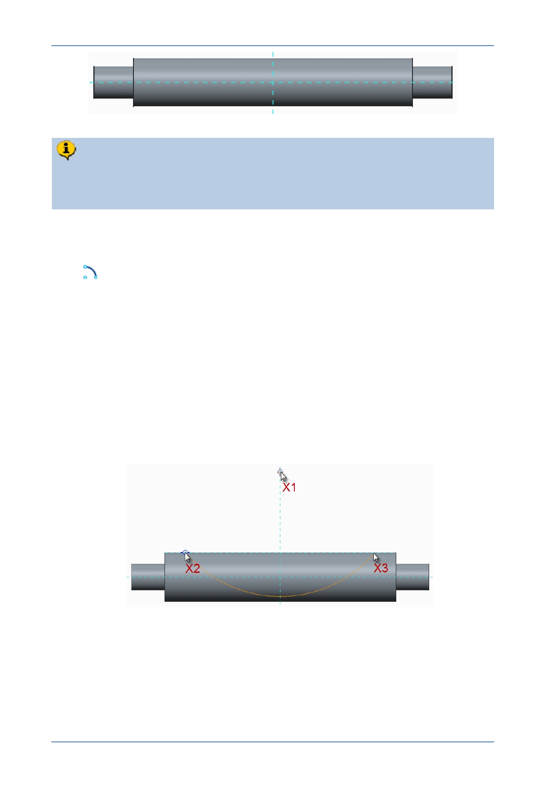

PTC Academic Program
The sketch you will be creating must to be snapped to the top silhouette edge of
the strut. To do this, you will create geometry references on-the-fly, using the
ALT key.
3. Starting an arc:
In the Sketch tab, from the arc types drop-down menu, select Center and Ends
.
Move the cursor until it snaps to a point X1 on the vertical reference above the
strut. Click to place the center of the arc.
4. Creating a reference on-the-fly.
Move the cursor away from the center and you will see a construction circle
previewing the size of the arc you are creating.
With the cursor over the top horizontal edge of the strut at X2 , press the ALT key
and click.
Release the ALT key and a light blue dashed reference line will appear along the
top edge of the strut.
With the cursor over the reference line, also at X2 , click to locate the start point of
the arc.
Move the cursor to the right and click on the reference at X3 to locate the
endpoint of the arc.
Middle-click in the graphics area to deselect the arc tool.
© 2012 PTC
Creo Parametric 2.0 Primer
Page 55